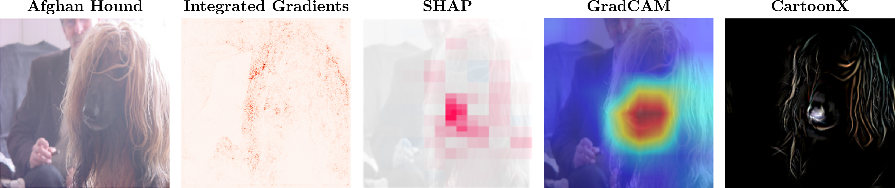
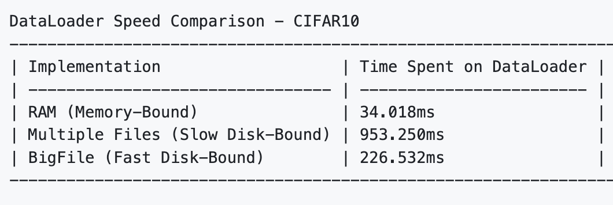

Stefan Kolek
Munich, Germany · kolek@math.lmu.de · GitHub
About
I am a Computer Vision PhD student at LMU Munich. My PhD research developed explainability methods for image classifiers using classical sparsity techniques, such as wavelets and dictionary learning. Currently, I am working on 3D vision. Love applying AI to practical and impactful vision applications.Education
- 2021-now PhD Computer Science
- Ludwig-Maximilians-Universität München, Germany
- Title: Sparse Representation Methods for Explainable Image Classification
- 2018-2021 MS Mathematics
- Technische Universität Berlin, Germany
- 2015-2018 BS Mathematics
- Ludwig-Maximilians-Universität München, Germany
Software
-
CartoonX (PyPI package)

Understanding the decisions of deep image classifiers can be challenging. CartoonX is a saliency map method for image classifiers operating in the wavelet/shearlet domain. It extracts the relevant piecewise-smooth (cartoon-like) part of an image by optimizing a sparsity-driven deletion mask on wavelet/shearlet coefficients. Most saliency methods highlight individual pixels (e.g. Integrated Gradients, LRP), blocky superpixels (e.g. SHAP, LIME) or very smooth windows of pixels (e.g. GradCAM). CartoonX highlights fine image structure, allowing it to separate classifier-relevant edges and textures that drive the prediction.
-
BigFile (Python Utility)

Many large datasets do not fit into RAM and consist of millions of compressed files which greatly slow down the dataloader during training. BigFile is a Python utility for transforming large datasets into a single binary file with merged gzip streams. BigFile is fully compatible with torch.utils.data.Dataset and offers up to 4× faster dataloading compared to reading each entry from its own file.
Publications
- Learning Interpretable Queries for Explainable Image Classification with
Information Pursuit.
- S. Kolek, A. Chattopadhyay, K. Chan, H. Andrade-Loarca, G. Kutyniok, R. Vidal. ICCV 2025.
- Complex-Valued Federated Learning with Differential Privacy and MRI Applications.
- A. Riess, A. Ziller, S. Kolek, D. Rückert, J. Schnabel, G. Kaissis. International Conference on Medical Image Computing and Computer-Assisted Intervention 2024
- Beyond the Calibration Point: Mechanism Comparison in Differential Privacy.
- G. Kaissis*, S. Kolek*, B. Balle, J. Hayes, D. Rückert. ICML 2024.
- Optimal privacy guarantees for a relaxed threat model:
Addressing sub-optimal adversaries in differentially
private machine learning.
- G. Kaissis, A. Ziller, S. Kolek, A. Riess, D. Rückert. NeurIPS 2023.
- Explaining Image Classifiers with Multiscale Directional Image Representation.
- S. Kolek, R. Windesheim, H. Andrade-Loarca, G. Kutyniok, R. Levie. CVPR 2023.
- Cartoon Explanations of Image Classifiers.
- S. Kolek, D. Nguyen, R. Levie, J. Bruna, G. Kutyniok. ECCV 2022 (Oral).